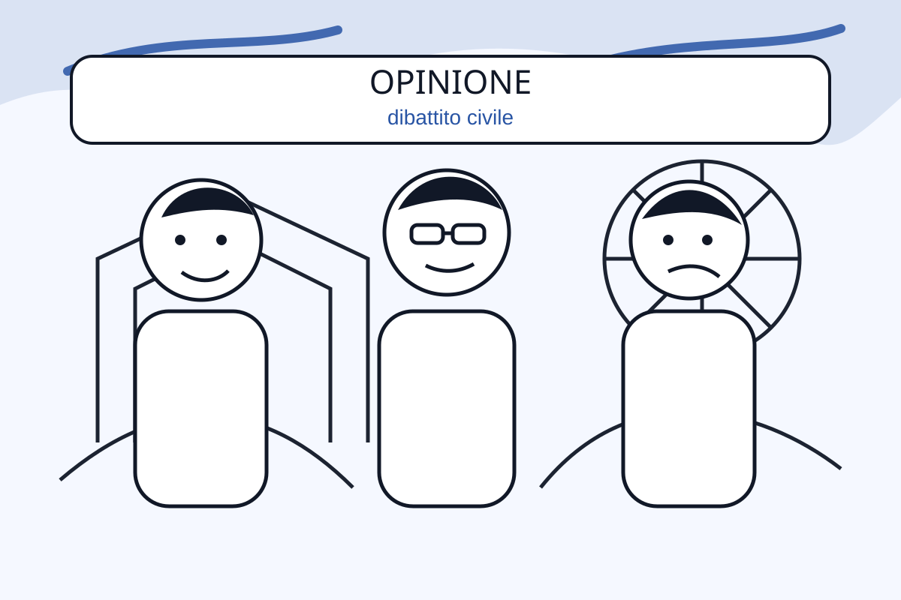
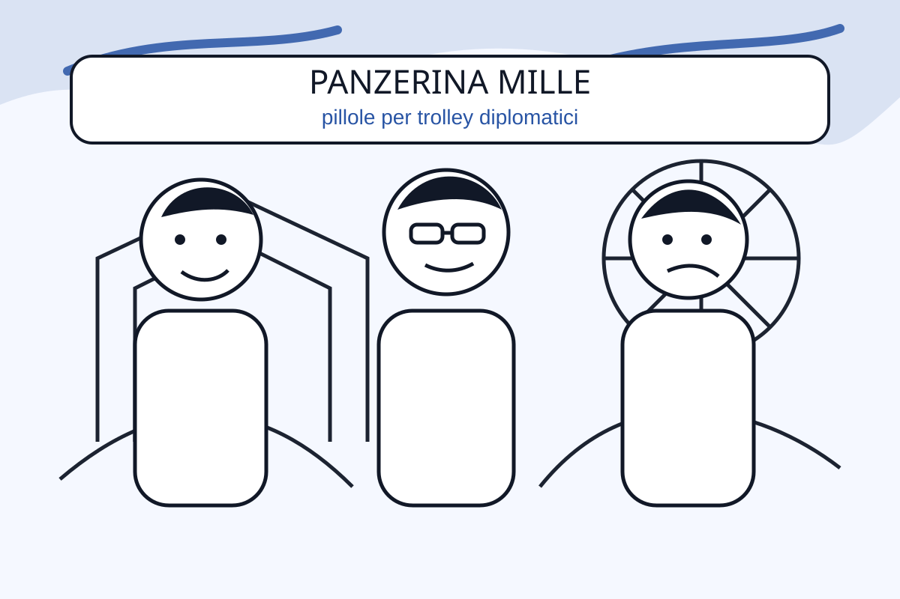
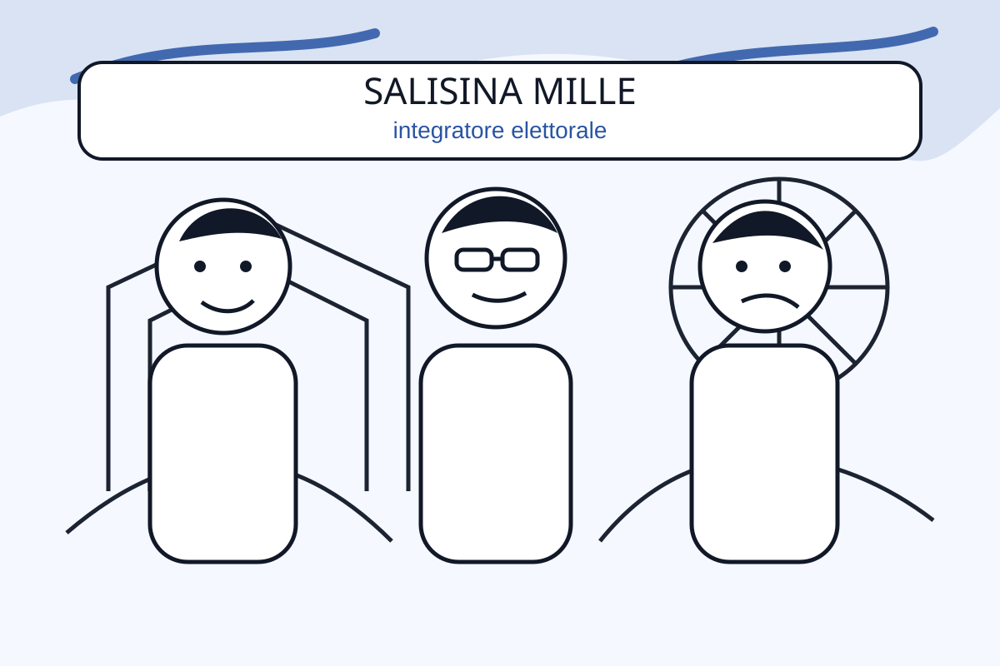
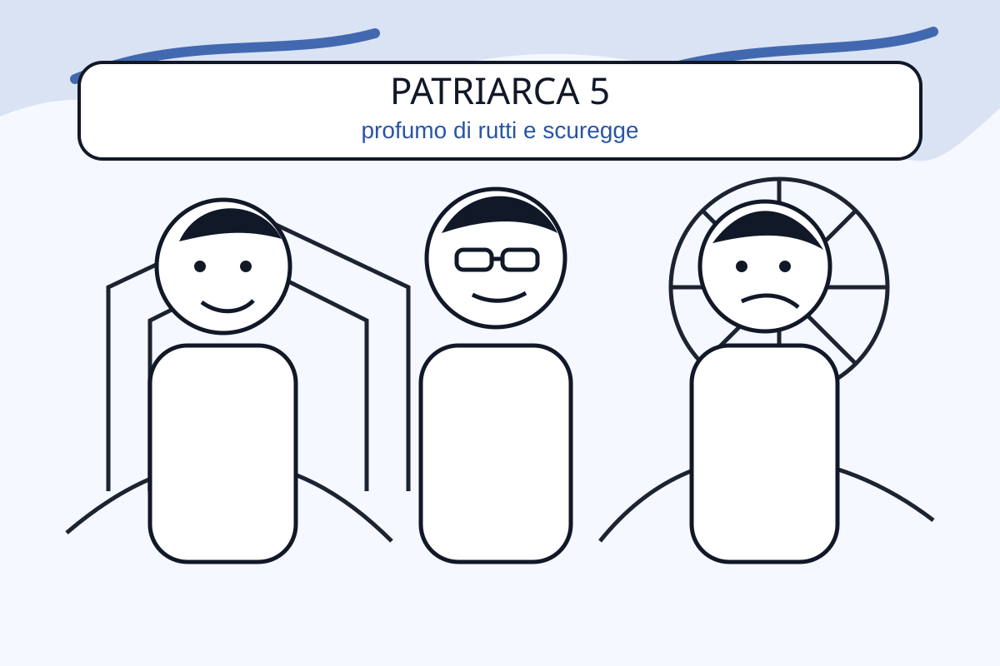

Il rifugio climatico che fa orario d’ufficio
Placeholder articolo. Qui inseriremo titolo, autore, data e testo reale.
Player Spreaker ufficiale integrato. La vignetta laterale cambia con le nuove puntate.

Placeholder articolo. Qui inseriremo titolo, autore, data e testo reale.
Approfondimenti scritti, collegabili alle puntate.

Testi brevi, leggibili e condivisibili.
L'unico Laboratorio che pensa a Noi!

Pillole per trolley diplomatici pieni di soldi.

Integratore elettorale ad assorbimento parlamentare.
Supposta rinfrescante contro il caldo killer.

Profumo di rutti e scuregge per attirare donne.
Qui inseriremo poche righe secche, in evidenza, quando mi fornirai il testo definitivo.